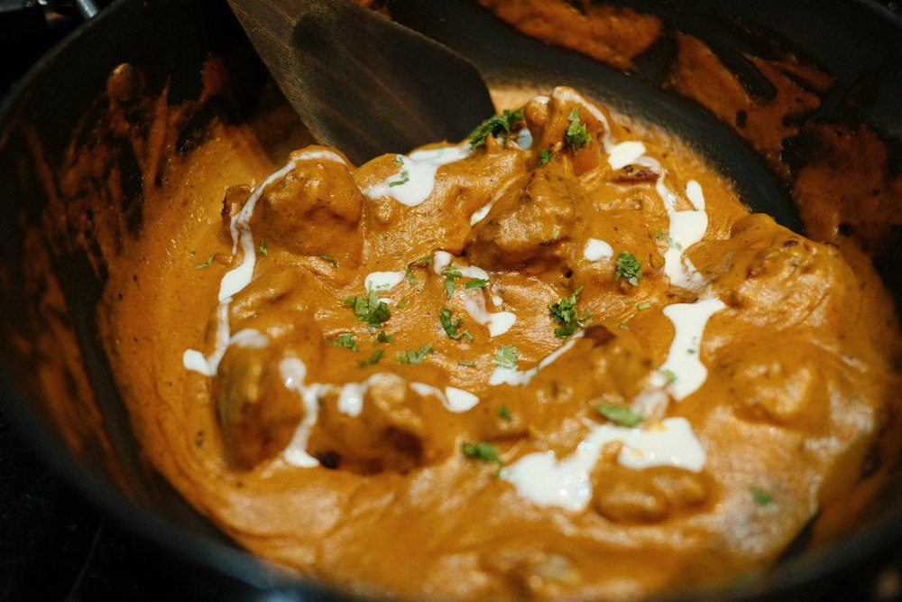
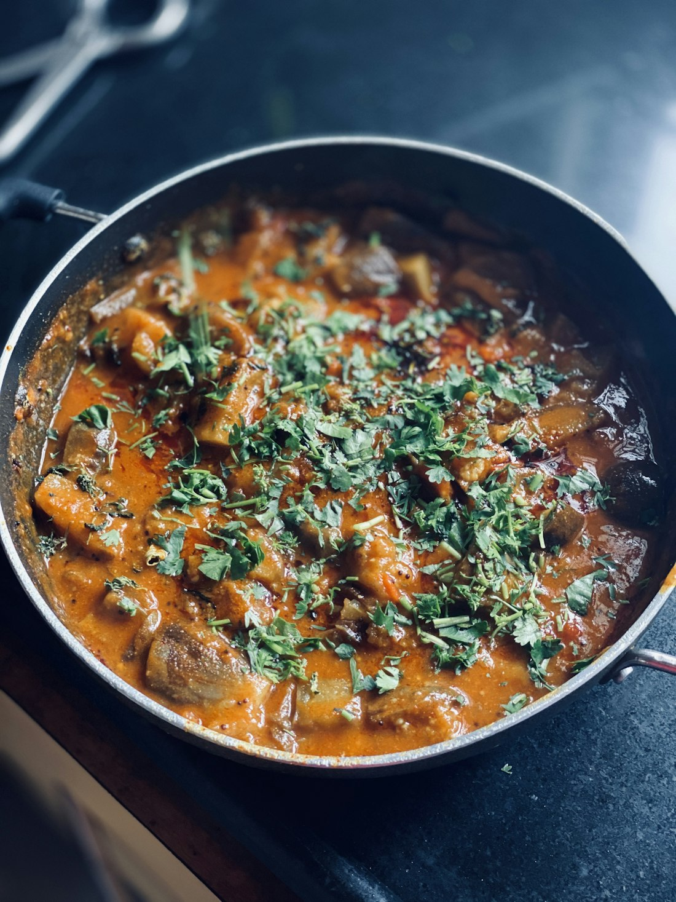

01 • DAILY PREP CONCEPT
Hand-Roasted Spices
Whole cumin, coriander seeds, black cardamom, and mace toasted gently over low embers and stone-ground to preserve their natural essential oils and vibrant fragrance.
Welcome to The Royal Kitchen. In the heart of Kanpur, we honor slow-food culinary rituals—cooking with cold-pressed oils, freshly ground spices, and unhurried hospitality.

Country chicken slow-simmered in stone-ground kalonji (nigella seeds), caramelized onion paste, and cold-pressed mustard oil, finished with a fragrant saffron infusion. Rich, comforting, and crafted with genuine care.
* Note: Dish concept, preparation notes, pricing, and restaurant details are fictional demonstration content for web design practice.
The Royal Kitchen began with a simple belief: the finest meals are never rushed. In Kanpur, food has always been a quiet language of warmth—generous, richly layered with spice, and shared across full family tables.
We combine the patient dum cooking traditions of Awadh with the comforting familiarity of home-cooked meals. Rather than relying on heavy fats, excess cream, or artificial colors, our kitchen concept prioritizes time: allowing stone-ground spices to bloom in cold-pressed oils and gravies to develop depth through gentle simmering.
“True hospitality isn't about grand palaces; it is the feeling of being welcomed into a home where someone spent hours cooking just for you.”
— The Royal Kitchen Philosophy (Demo Concept)

Three quiet commitments that define the culinary identity of our kitchen concept.
Whole cumin, coriander seeds, black cardamom, and mace toasted gently over low embers and stone-ground to preserve their natural essential oils and vibrant fragrance.
Porous unglazed clay handis and heavy cast-iron kadhais distribute heat slowly and evenly, sealing in natural moisture and imparting a subtle, rustic aroma.
Dining is an occasion to savor, never a rushed transaction. Our dining room concept in Swaroop Nagar is designed for quiet comfort, where conversations naturally linger.
* Disclaimer: The Royal Kitchen is a fictional restaurant demonstration project for web design learning. All culinary claims, ingredient sourcing, cooking methods, and location details are conceptual examples.